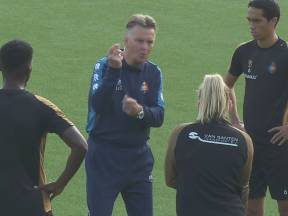
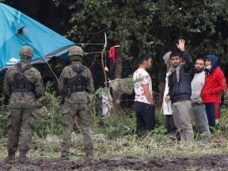

Oranje via 'Panenka' Depay op 3-0 tegen Turkije
Louis van Gaal had vooruitgang gezien bij Oranje, maar wilde die nog wel even op het veld zien. De bevestiging kreeg hij mede door drie goals van Memphis Depay met een spetterend optreden tegen Turkije in Amsterdam (6-1). Door de zege nam Oranje de koppositie in groep G over van Noorwegen, dat met 5-1 won van Gibraltar. De start was illustratief voor de wedstrijd. Na vroeg druk zetten op de Turkse defensie heroverde Oranje de bal, gaf Steven Berghuis voor op Klaassen, die met de hak combineerde met Memphis Depay en daarna de hoek van het doel vond. Een wervelend begin.
Klaassen en Depay draaien Turken dol
Meteen waren de Turkse fans in de Johan Cruijff Arena, die vooraf nog veel lawaai maakten, stil. En dat bleef zo, want Oranje ging door. Opnieuw was de combinatie Klaassen-Depay verantwoordelijk. Depay speelde in op Klaassen, die de bal met een omhaal verlengde en Depay plaatste de bal achteloos mooi in het doel.
Oranje speelde Turkije ook in het restant van de eerste helft van het kastje naar de muur. Steven Bergwijn, de vervanger van de geblesseerde Cody Gakpo, dartelde op links, Steven Berghuis strooide met passjes van rechts en Memphis en Klaassen bleven elkaar in het centrum zoeken.
Depay naast Cruijff
Na een passje van Bergwijn werd Klaassen neergehaald door Çaglar Söyüncü, waarna arbiter Daniele Orsato naar de stip wees. Depay ging achter de bal staan en benutte de buitenkans niet voor het eerst met een 'Panenka', een wippertje.
Çaglar Söyüncü kreeg geel voor zijn overtreding op Klaassen en ontving vlak voor rust nog een prent na het neerhalen van Depay. De Turken moesten daarom met tien man verder. Na rust was het Turkse tiental even gevaarlijk, maar Depay gaf in de 54ste minuut de genadeklap door na terugkoppen van Berghuis zijn derde goal binnen te koppen.
-
Consumenten kopen voor het eerst meer dan voor de coronacrisis
-

Bondscoach Van Gaal op het veld als hoofdtrainer Telstar: 'Louis moet winnen'
-

Marechaussee alert op illegale migratie via Wit-Rusland, hulp aan grens Litouwen